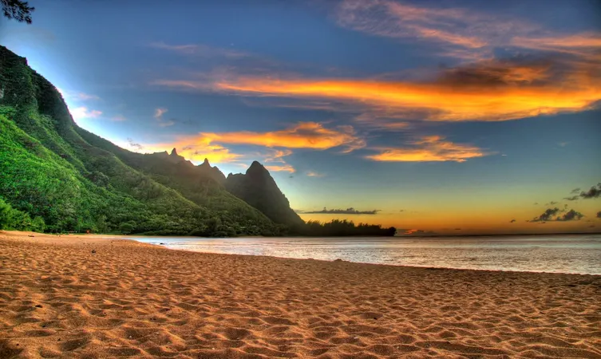
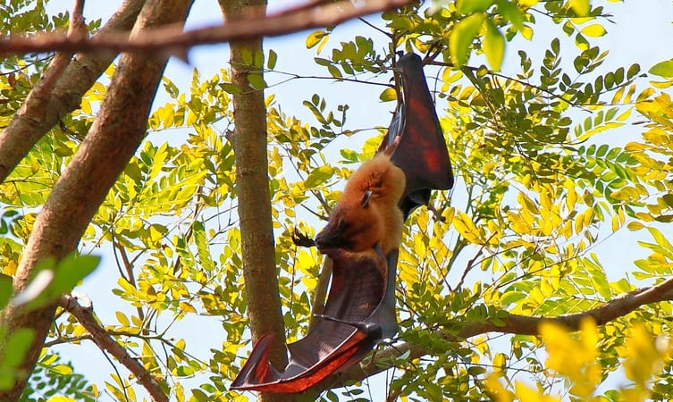

1. Chottanikara Bhagavathy Temple

2. Folklore Museum

3. Andhakaranazhi Beach

4. Mangalavanam Bird Sanctuary

5. Kerala Kathakali Centre


The flourishing city of Ernakulam or Kochi, in the South West Coast of Kerala, also known as ”Gods Own Country”, is renowned for its breath-taking beauty overlooking the Arabian Sea with backwater hubs like Kottayam and Alappuzha districts in the south. For centuries, it has been a melting pot of merchants and tourists from across the world and has witnessed the presence of invaders like British, Arabs, Chinese, Portuguese, and even Dutch.
The pleasing surroundings and easy connectivity to other parts of the country make Ernakulam one of the most popular tourist cities in Kerala. Also known as the “Commercial Capital of Kerala”, it hosts the highest number of international and domestic tourists and is the major business hub of Kerala with the highest revenue yielding record in the state.
Ernakulam was formed by the two princely states of Travancore and Cochin and the British Malabar in 1958 by carving out regions from Thrissur and Kottayam and came to be acknowledged as the biggest natural port and centre of trade on the West Coast. The city boasts some of the most charming churches and palaces that reflect the Portuguese, Arab and British influence left behind by their legacy and cultural imprints as well various historical sites, synagogues, ancient mosques, temples, forts, beaches and other tourist attractions.